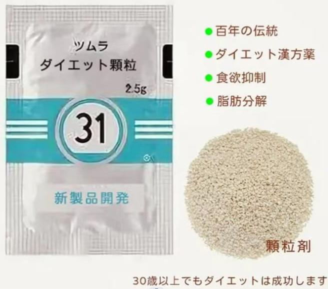
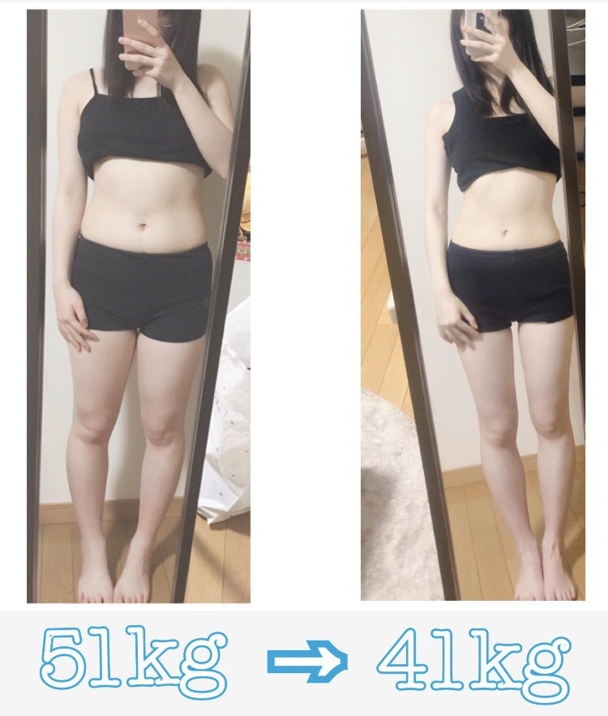
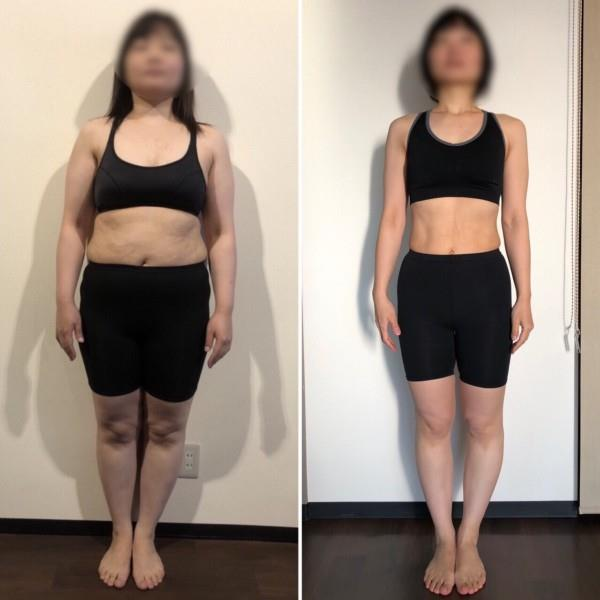
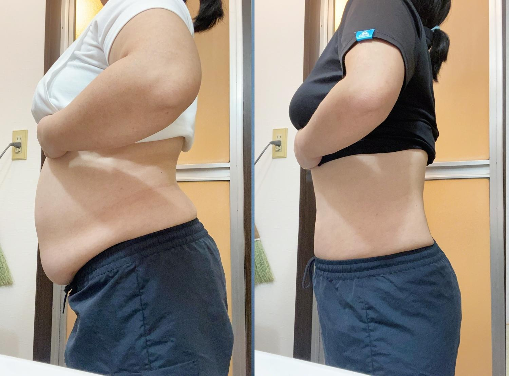
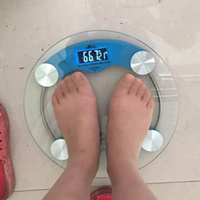
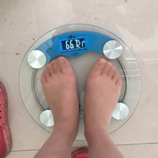

2023-03-08 09:49
マコさんのダイエット比べ
1ヶ月で12kgダイエットして、ウエストが7cm減ってました〜！！！旦那もびっくりしています。ダイエット方法は簡単で、1日1次、漢方ダイエット薬粉
まこさんがこれを使った
真子さんによると、先生からこの漢方ダイエット薬粉を買って、1ヶ月飲んだらよい効果をもたらし、より寝つきが良くなり、腸内環境や新陳代謝も改善できます。
マジックパウダーのすごさ
詳しい調査を通じて、漢方ダイエット薬粉は数百年にテクノロジーで生薬を伝統的な処方に従って作られる製品です。現在、供給不足から、全面的な普及はできない、LINE公式アカウントでのみ販売されています。それは効果や健康を目指して、ダイエットしながら美容、デトックス、アンチエイジングの効果がありますが、今20つの欧米諸国でも人気が高いです。
漢方ダイエット薬粉は発売以来、お客様から信頼され、称賛され、愛されています。この製品をご利用するお客様は「毎日1回しか飲んでいない、本当に健康で効果も高い」と言われています。食事制限もなく、痩せるのは脂肪吸引よりもはやいです。また、一定期間飲むとお肌が綺麗になり、体重を減らすことができます。
さらなる成功フィードバック：
ダイエットに成功した私は、この製品を飲んだら、大量うんちが出たが、排便後はぽっこりお腹がへこんでなって、体重が1kg落ちてきました。自分の腸の中でそんなに大便があることにびっくりしました。 すぐにLINEでダイエット先生に連絡して、先生は私に「排出されるのは体にたまった宿便、毒素や油脂だけで、飲み続けて、もっときれいになるに違いないよ」と言われていました。その後、1日1次、漢方ダイエット薬粉を飲んでください体重が毎日1.5キロほど落ちてきます。元々ぽっこりお腹がへこんだり、太ももが細くなったり、ウエストラインも出てきました。40日間飲んだら、13キロ痩せて、乾燥していたお肌もみずみずしくなりました。
漢方ダイエット薬粉は色素沈着を緩和させる効果があります。体重70キロだった吉田さんは2カ月で漢方ダイエット薬粉を飲んだら体重が15キロ落ちてきました。また、お肌をもっときれいにして、顔のシミも消えていました！
漢方ダイエット薬粉は血管を疎通させ、乳腺の増殖や腫瘍を予防する効果があります。石井さんは以前、乳腺の増殖にかかっていましたが、漢方ダイエット薬粉を２ヶ月飲んで、体重は65キロから48キロまで減っていました。石井さんは健康診断でカラードップラーによると、乳房の腫瘤がなくなり、乳房もより柔らかくなったそうです！
漢方ダイエット薬粉は減量よりも驚くべき利点がありますか？
漢方ダイエット薬粉は体重を減らすだけでなく、40日以上たっぷり飲むと体に3つのメリットがあります！
1つ目：デトックスし、腸内環境を整える。それは腸内細菌叢のバランスをとって、宿便を排出し、便秘を解消し、ニキビを改善し、口臭を消すのに役立ちます。
2つ目：気血を疎通する。気滞、瘀血や肝気を疎通する作用があり、ボディラインがはっきりなります。
3つ目：アンチエイジング。みずみずしく弾力のある若い肌になり、しわも薄くなり、飲めば飲むほど若くなります。だから、この粉末を飲る方が多いです。痩せても飲み続けて健康的で美しいために。
結論：長年の研究を経て、ついにこの漢方ダイエット薬粉を作り出し、2023年に、ついにダイエットの問題を徹底的に解決することができます。
150,0000+ 既読 120,0000+ いいね
 カイドウのつぼみ
カイドウのつぼみ
今年50歳で、更年期から体重は年々増加してしまいます。医者は「更年期以降、基礎代謝が低下するから」と言われていました。わずか3年で体脂肪率は21%から29%になってしまった。太ったら、排便も難しくなった、さらに薬物で排便を促しなければなりません。医者は「これ以上ダイエットしないと脂肪肝につながるかもしれません」と言われていました。
友達からの紹介で先生のlineを追加して、先生は私の肥満の原因と体質を丁寧に分析してから、詳しいダイエットプランを立ててくれました。私の体調に合わせるダイエット製品を利用して、54日で25キロ減量し、体脂肪率も22%に戻りました。今では仕事でも生活でもだんだん自信が出てきました。先生のご指導のおかげです。
15時間前
2528
 わかな
わかな
友達からの紹介で先生のlineを追加して、先生は私の肥満の原因と体質を丁寧に分析してから、詳しいダイエットプランを立ててくれました。私の体調に合わせるダイエット製品を利用して、54日で25キロ減量し、体脂肪率も22%に戻りました。今では仕事でも生活でもだんだん自信が出てきました。先生のご指導のおかげです。
15時間前
1853
 りのるん
りのるん
先生のご指導のおかげで、15キロ減量できました。以前はダイエットのために運動を毎日続け、食事制限をし（お母さんと食事をするとよく批判されて）、我慢ばかりの人生に疲れました。先生は「今あなたは水を飲むだけでも太ってしまう体質」と言われていました。その後、先生は私の体調に合わせるダイエットプランを立ててくれました。幸せに、このダイエット方法で私を痩せさせてきます。痩せたい方は先生のLINEを追加でき、本当にいいね～！
18時間前
1580
 なかやままき
なかやままき
2人出産された私は20kg近く増えてしまったが、1人目は8キロ増え、2人目は12キロ増えた（泣）。ぶよぶよの体のせいで、旦那は嫌になり、夫婦別寝室にもなってしまった。毎日鏡の中に見ている自分の姿、卑屈になってしまう自分が嫌です……。 先生に出会えてよかった、痩せたら旦夫婦関係はさらに親密になった（男はやっぱりナイスバディの女性が好きだね）ハハハ！！！ダイエットに成功した後、周囲の空気をきれいになったような気がします。やぱり、みんなに先生のダイエットプランをお勧めしますが、先生はすごくやさしい方ですね。（笑）
18時間前
621
 ムッシャー
ムッシャー
息子は「ママの腰回りはまるで浮き輪をつけているように」と言って！！！ 先生のご指導のおかげで9キロ減量に成功しました。 息子はパパに「お母さんの浮き輪がなくなったよ」と言って、ハハハ。。。
2日前
733
 なな
なな
ほっそりした体つきより健康診断結果報告書が気になります。体重過剰のため、健康診断結果から見ると、すべての数値があまりよくありません！ 足がむくんで歩けない、いろいろなダイエット法試したのに、最後に失敗してしまった。先生のおかげで、昨年から肥満の悩みから抜け出すことに成功した。前回の健康診断報告書では、各身体指標が正常に回復したが、お医者さんも驚きました。（笑）
2日前
423
 くるみん
くるみん
食べることが好きですが、運動は嫌いです。そのため、自分の体型は自分でも嫌いな体型になりました。旦那が私にフィットネスクラブに行くようにお勧めして、やっと5キロ減らしたが、結局怠惰で続かなかった。そのため、それはすぐにリバウンドしてしまいました（泣）。前回旦那と旅行に行ったときに階段を登ってから動悸を起こしてしまった。慌てふためいた私はあちこちダイエットの方法を探していた。何度も失敗を繰り返した後、今の先生に出会って、先生のご指導のおかげで、減量に成功しました。今ではダイエットに成功しただけでなく、いくら食べても太らない体質にもなりました。これからも頑張りますね！！
2日前
1388
 ルネ
ルネ
結婚式の3ヶ月前に12キロ減量しました（笑）、結婚式の時は久しぶりに親戚が「花嫁は本当にきれいで、前よりもやせていて、もう少しで見分けがつかないところだった」と言われていました。右の写真は旦那と新婚旅行に行った新幹線で撮ったものです。先生のことは、本当にありがとうございました。
3日前
265
 みな
みな
私はモデルで、もし先生のダイエットプランがなければ、仕事を失うことになるかもしれない！ ダイエットして2年になりましたが、今までもリバウンドがなくて、仕事でもっと楽になり、前のように余分な贅肉に悩まさなくてもいいようになりました。この先生のダイエットプランはダイエットしたい方におすすめて
3日前
916
 みき
みき
肥満に生活リズムが崩れてしまった。太ももやお腹が太るので、同僚にダイエットをよく勧められています（嘲笑うよりもこれは腹が立つと思う） 私は一気に仕事を辞めたが、結局肥満でずっと仕事が見つからなかった。がダイエットに踏み切って、例えば散歩し（1日2万歩）、炭水化物抜きをし、ヨガをし、ジムを行き、置き換えダイエットをするなどのダイエット方法を試してみました！ 最後に無理なダイエットで胃下垂を引き起こしてしまった（泣）。2021年にまた拒食症になって18キロ落ちたけどが、拒食症を治療しなければなりません。結局、拒食症を治療している間に体重が急に増えてしまった。お医者さんは私に「これ以上ダイエットをやめたほうがいいです」と言われました。 幸せに、先生に出会った。先生は私の体調に合わせるダイエットプランを立ててくれました。これまでのダイエットは失敗でしたが、このダイエット方法は体質改善で痩せてきます。そのため、内臓脂肪を減らしたら減量に成功した！これから私の新しい生活が始まった！先生のことは、本当にありがとうございました(^_^)
5日前
916 はなる
はなる
 ゆきな
ゆきな
 りおな
りおな
 まりか
まりか
 さりな
さりな
 のどか
のどか
 あかり
あかり
不思議です。こんなに凄いなんて思いもよらなかったです。簡単に6キロも痩せました。
 

10日前
 かえで
かえで
 そらね
そらね
この記事を読んで、かなり研究した。あなた達のフィードバックを読んで、やっと、連絡先追加して、色々問い合わせしました。本当にプロですね！毎日沢山の反響が来ています。
11日前
452 みお
みお
 さくら
さくら